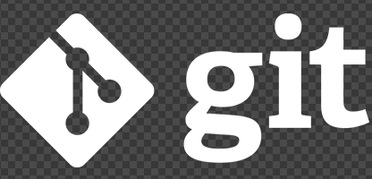

What is the purpose of a README file?
The purpose of a README file is to explain what a project is and how to use it. Furthermore, it helps anyone who read the project understand the project quickly.
READ MOREWhat is the purpose of a README file?
The purpose of a README file is to explain what a project is and how to use it. Furthermore, it helps anyone who read the project understand the project quickly.
READ MORE
A wireframe is used to plan the basic structure and layout of a webpage or application before design and development begin. It focuses on functionality and content placement rather than colours or styling, helping to visualise how users will interact with the page. Wireframes improve communication between designers and developers, support better user experience planning, and save time by identifying issues early while also guiding the structure of the HTML used in development.
READ MORE
A branch enables developers to implement changes, test new ideas, and commit work independently. After completion and review, the branch is merged into the main branch, commonly referred to as main or master. This process facilitates team collaboration, version management, and maintains the stability of the main codebase during ongoing development.
READ MORE